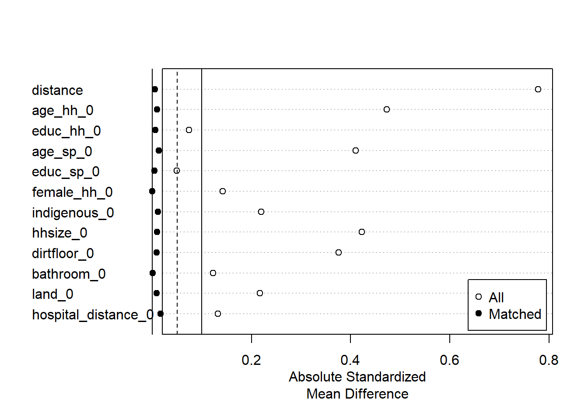

if (!require("pacman")) install.packages("pacman")pacman::p_load(tidyverse, here, haven, # for reading Stata .dta files sjPlot, # for viewing codebook and summarizing regression models srvyr, # for survey weighting and setup: can use with tidyverse survey, # for regression with survey data estimatr, # for regressions broom, # alternative for regressions modelsummary, # alternative for viewing model summaries MatchIt, # implements matching approaches kableExtra, # alternative to gt for tables gt) # remotes::install_github("datalorax/equatiomatic") # for printing of regression equationslibrary(equatiomatic)
Introduction
This document consolidates my learning about techniques for casual inference in education in a single document, and includes a list of resources for further reading.
Summary table
Method
When to use?
Assumptions
Examples
xx
Randomized controlled experiment
We can randomly sample and assign individuals to treatment and control groups.
There are explicit program assignment rules.
Difference-in-differences
Something “naturally” separates individuals into a treatment and control group - not separated based on a numerical cutoff.
Program assignment rules are not clear.
Parallel trends
There is no factor disproportionately impacting only one group at time of treatment
Spread of cholera in London between 1849 and 18541,2
The case study presented in ‘Impact Evaluation in Practice’ relates to an evaluation of a health insurance subsidy program (HISP), intended to reduce out-of-pocket health-care costs for low-income households.
Data for this fictional case-study can be downloaded from the World Bank’s Open Knowledge Repository. Select ‘Additional Material’ to download the zip folder ‘Impact evaluation in practice’. I saved the entire contents of this folder to the ‘iep’ subfolder of the ‘data’ folder within this project.
The difference-in-differences approach compares changes in outcomes over time between a population receiving treatment and a population not receiving treatment6. This removes the time-varying differences assumed to be constant between groups and cancels out the effect of observed and unobserved time-invariant characteristics of individuals.
Difference-in-differences approaches assume parallel trends between the treatment and control group: “treatment and control groups evolve similarly in the absence of treatment, even if from different starting points”7.
We can test this by:
comparing repeatedly before implementation
including a fake treatment group, for whom we expect to find zero impact (e.g., grade level not exposed to the treatment, nor being used as comparison group)
calculating estimates for a fake outcome, for which we expect to find zero impact (e.g., number of siblings)
using multiple comparison groups (for whom estimated impact should be approximately the same)
# Note that Liam's code uses estimatr::lm_robust (to generate clustered standard errors, which appears necessary with clustered data), which we continue to do below, but equatiomatic can't be used with object of class lm_robust# <https://evalf21.classes.andrewheiss.com/example/standard-errors/>out_did <- estimatr::lm_robust(health_expenditures ~ round * enrolled,data = HISP %>%filter( treatment_locality ==1),clusters = locality_identifier)out_did_wcov <- estimatr::lm_robust(health_expenditures ~ round * enrolled + age_hh + age_sp + educ_hh + educ_sp + female_hh + indigenous + hhsize + dirtfloor + bathroom + land + hospital_distance,data = HISP %>%filter( treatment_locality ==1),clusters = locality_identifier )
Regression output
In Table 2, we use sjPlot::tab_model to summarize the outputs of both regressions, side-by-side. Note that sjPlot works well with labelled data (i.e., we started with a stata data file with variable labels assigned, and imported this using haven::read_dta). Also note that html is the only output format (not PDF).
The second model is of the form shown in Equation 2
\[
health expenditure = 27.39 + 1.45 \times round - 1.51 \times enrolled - 8.16 \times round:enrolled (and a string of adjustments for covariates)
\tag{2}\]
Differences-in-differences for impact of Social Security Survivor Benefits on college attendance
Murnane and Willett (2010)4 provide a case study looking at college attendance before and after 1981, when financial aid for college stopped being provided to children of deceased fathers. (See8 for original analysis.)
Data for case studies in this book can be downloaded from UCLA’s Statistical Methods and Data Analytics website. I saved the entire contents of this folder to the ‘methods_matter’ subfolder of the ‘data’ folder within this project.
# survey set up and weightingsrvy_data <- sssb %>% srvyr::as_survey_design(ids = hhid, weights = wt88)
Two way comparison of means
Table 3 presents mean college enrollments by the age of 23, for those receiving or not receiving social security benefits, before and after changes to eligibility for offers of support. (Note that receipt of social security benefits was determined based on whether young people’s fathrs had died before their 18th birthday.)
The interaction term offer x father deceased is the difference-in-differences estimate, indicating that for those eligible for support (i.e., those with deceased fathers), enrollment percentages were 18 percentage points higher during the period in which support was provided than afterwards.
Note Gary King and Richard Nielsen9,10 talk about how we shouldn’t use propensity scores for matching for identification purposes (i.e., when trying to isolate the relationship between x and y, and remove the confounding).1,See also 11. Note that they are fine to use in other contexts (e.g., for inverse probability weighting), but consider reworking the examples below with nearest neighbor or Mahalanobus distance.
Overview
Matching approaches to causal inference calculate the estimated impact of a program by comparing the average difference in outcomes between those receiving the treatment and a statistically matched group of controls.6.
A lack of common support refers to the situation where the distributions of variables used to match treatment and control observations do not sufficiently overlap.1,6. In this situation, we might restrict the sample and estimate the Local Average Treatment Effect “for observations with common support in the distribution of propensity scores.
Only (1) observed characteristics (2) measured at baseline can be used for matching, and (3) results are limited by the characteristics used for matching. It is most important to match on the basis of characteristics that impact whether units receive treatment or not.
Note also that if baseline data on outcomes are available, the matching method should be combined with difference-in-differences. This further reduces bias by accounting for any time-invariant unobserved characteristics. In this case:
match on observed baseline characteristics
calculate individual changes in outcomes before and after treatment for treated group
calculate individual changes in outcomes over time for matched comparison units
subtract 3) from 2)
average the double differences
Propensity score matching
Propensity score matching computes the probability of enrollment in the program at baseline (based on observed characteristics) of those receiving and not receiving treatment, and matches units in the treatment group with non-treated units whose propensity scores are the closest6.
Propensity score matching for the HISP case study
Convert dataset to wide format
Code
HISP_wide <- HISP %>%pivot_wider(names_from = round,values_from =c(health_expenditures, poverty_index, age_hh, age_sp, educ_hh, educ_sp, female_hh, indigenous, hhsize, dirtfloor, bathroom, land, hospital_distance, hospital)) %>%# remove household with missing values for health expenciture at baselinefilter(!is.na(health_expenditures_0))
Estimate propensity scores and find matches with the matchit function
Code
# estimate propensity scores using only age_hh and educ_hh at baseline# psm_r = propensity score matches using restricted modelpsm_r <-matchit(enrolled ~ age_hh_0 + educ_hh_0,data = HISP_wide %>% dplyr::select(-hospital_0, -hospital_1),distance ="glm", link ="probit")psm_ur <-matchit(enrolled ~ age_hh_0 + educ_hh_0 + age_sp_0 + educ_sp_0 + female_hh_0 + indigenous_0 + hhsize_0 + dirtfloor_0 + bathroom_0 + land_0 + hospital_distance_0,data = HISP_wide %>% dplyr::select(-hospital_0, -hospital_1), distance ="glm", link ="probit")
Summarize estimates of propensity scores based on baseline observed characteristics
Table 4 presents two models for calculating propensity scores, one with a limited set of explanatory variables and one with a full set. This table suggests households are less likely to be involved in the program if the head of the household is older, more educated, or female. Households with a bathroom, or owning larger amounts of land are also less likely to be enrolled. Households are more likely to be enrolled if they are indigenous, larger, have a dirt floor, or are located further from the hospital. This suggests the program has been successful in enrolling target poorer households.
Code
sjPlot::tab_model(psm_r$model, psm_ur$model,transform =NULL,dv.labels =c("Limited set of explanatory variables", "Full set of explanatory variables"),digits =3)
Table 4: Estimating the propensity score based on baseline observed characteristics [Table 8.1 in Gertler et al. (2016)]
Limited set of explanatory variables
Full set of explanatory variables
Predictors
Log-Odds
CI
p
Log-Odds
CI
p
(Intercept)
0.554
0.440 – 0.668
<0.001
-0.497
-0.674 – -0.321
<0.001
Age of the head of the
household(in years)
-0.021
-0.023 – -0.019
<0.001
-0.013
-0.017 – -0.010
<0.001
Education of the head of
household(completed years
of schooling)
-0.041
-0.052 – -0.030
<0.001
-0.022
-0.034 – -0.009
0.001
Age of the spouse(in
years)
-0.008
-0.012 – -0.004
<0.001
Education of the
spouse(completed years of
schooling)
-0.016
-0.029 – -0.002
0.020
Head of the household is
a woman(0=no,1=yes)
-0.020
-0.122 – 0.080
0.691
Head of household speaks
an indigenous
language(0=no,1=yes)
0.161
0.101 – 0.222
<0.001
Number of household
members(baseline)
0.119
0.106 – 0.132
<0.001
Home has a dirt floor at
baseline(0=no,1=yes)
0.376
0.316 – 0.436
<0.001
Home with private
bathroom at
baseline(0=no,1=yes)
-0.125
-0.181 – -0.068
<0.001
Number of hectares of
land owned by household
at baseline
-0.028
-0.038 – -0.018
<0.001
Distance to closest
hospital
0.002
0.001 – 0.002
<0.001
Observations
9913
9913
R2 Nagelkerke
0.062
0.147
Note: Probit regression. The dependent variable is 1 if the household enrolled in HISP, and 0 otherwise. The coefficients represent the contribution of each listed explanatory variable to the probability that a household enrolled in HISP.
kable(summary(psm_ur)$sum.all,caption ="Balance Before Matching") %>%kable_styling()
Balance Before Matching
Means Treated
Means Control
Std. Mean Diff.
Var. Ratio
eCDF Mean
eCDF Max
Std. Pair Dist.
distance
0.3694119
0.2683525
0.7780852
0.8189848
0.2003240
0.3118783
NA
age_hh_0
41.6565796
48.1384372
-0.4731180
0.7797904
0.0881294
0.2074113
NA
educ_hh_0
2.9711803
2.7744736
0.0742925
0.8959873
0.0218441
0.0622731
NA
age_sp_0
36.8363698
41.6117427
-0.4098452
0.8042407
0.0647834
0.2100395
NA
educ_sp_0
2.7032726
2.5810189
0.0494165
0.9256881
0.0141252
0.0689847
NA
female_hh_0
0.0732119
0.1100878
-0.1415669
NA
0.0368759
0.0368759
NA
indigenous_0
0.4291498
0.3203339
0.2198503
NA
0.1088159
0.1088159
NA
hhsize_0
5.7699055
4.9263203
0.4225943
0.8029708
0.0651539
0.1833283
NA
dirtfloor_0
0.7216599
0.5533170
0.3756130
NA
0.1683429
0.1683429
NA
bathroom_0
0.5735493
0.6340481
-0.1223283
NA
0.0604988
0.0604988
NA
land_0
1.6771255
2.2511153
-0.2172044
0.6390513
0.0240692
0.0881821
NA
hospital_distance_0
109.2043122
103.6626222
0.1323667
0.9916816
0.0395806
0.0829805
NA
After matching
Code
kable(summary(psm_ur)$sum.matched,caption ="Balance After Matching") %>%kable_styling()
Balance After Matching
Means Treated
Means Control
Std. Mean Diff.
Var. Ratio
eCDF Mean
eCDF Max
Std. Pair Dist.
distance
0.3694119
0.3687162
0.0053561
1.0138523
0.0007394
0.0084345
0.0055861
age_hh_0
41.6565796
41.7867746
-0.0095031
1.0867281
0.0114843
0.0381242
0.9086975
educ_hh_0
2.9711803
2.9549320
0.0061367
0.9271782
0.0094467
0.0239541
1.0892771
age_sp_0
36.8363698
36.9915655
-0.0133196
1.1143952
0.0104041
0.0371120
0.9332429
educ_sp_0
2.7032726
2.7128880
-0.0038867
0.8918377
0.0072981
0.0215924
1.0663763
female_hh_0
0.0732119
0.0732119
0.0000000
NA
0.0000000
0.0000000
0.1288799
indigenous_0
0.4291498
0.4234143
0.0115879
NA
0.0057355
0.0057355
0.9031755
hhsize_0
5.7699055
5.7884615
-0.0092956
0.8691665
0.0105626
0.0229420
0.9946331
dirtfloor_0
0.7216599
0.7253711
-0.0082806
NA
0.0037112
0.0037112
0.6857819
bathroom_0
0.5735493
0.5732119
0.0006822
NA
0.0003374
0.0003374
0.9816638
land_0
1.6771255
1.7010796
-0.0090645
1.0159498
0.0045968
0.0276653
0.8103167
hospital_distance_0
109.2043122
108.5100383
0.0165832
0.9993878
0.0104486
0.0485830
1.0886493
We can also plot the improvements in balance achieved by matching as in Figure xx.
Code
plot(summary(psm_ur))

What is the estimated effect of the program, using the matched sample?
Here my answers do not match those in the solutions
Textbook Table 8.3: full set, -9.95; limited set -11.35 (linear regression)
Liam:
full set, intercept 19.73 and enrolled of -11.89 (I do not match)
limited set intercept 17.84 and enrolled -10.00 (I match)
Code
# first extract matched data setHISP_match_df_r <-match.data(psm_r)HISP_match_df_ur <-match.data(psm_ur)# next, estimate program effect using (weighted) linear regression# as all weights here equal 1, no need to use weights # (one-to-one matching without replacement)out_lm_r <-lm_robust(health_expenditures_1 ~ enrolled,data = HISP_match_df_r, clusters = locality_identifier,weights = weights)out_lm_ur <-lm_robust(health_expenditures_1 ~ enrolled,data = HISP_match_df_ur, clusters = locality_identifier,weights = weights)# finally, summarize results of regression modelssjPlot::tab_model(out_lm_r, out_lm_ur,dv.labels =c("Limited set of explanatory variables", "Full set of explanatory variables"),digits =3)
Limited set of explanatory variables
Full set of explanatory variables
Predictors
Estimates
CI
p
Estimates
CI
p
(Intercept)
18.960
18.364 – 19.556
<0.001
17.840
17.280 – 18.401
<0.001
HH enrolled in
HISP(0=no,1=yes)
-11.120
-11.883 – -10.357
<0.001
-10.001
-10.724 – -9.277
<0.001
Observations
5928
5928
R2 / R2 adjusted
0.300 / 0.300
0.280 / 0.280
What is the estimated effect of the program, using difference-in-differences regression combined with matching?
Code
# first, merge matched data and original data, removing unmatched observations# limited set of explanatory variablesHISP_long_match_r <- HISP %>%left_join(HISP_match_df_r %>% dplyr::select(household_identifier, weights)) %>%filter(!is.na(weights))# full set of explanatory variablesHISP_long_match_ur <- HISP %>%left_join(HISP_match_df_ur %>% dplyr::select(household_identifier, weights)) %>%filter(!is.na(weights))# next, conduct difference_in-differences regressionsdid_reg_r <-lm_robust(health_expenditures ~ enrolled * round,data = HISP_long_match_r, weights = weights,clusters = locality_identifier)did_reg_ur <-lm_robust(health_expenditures ~ enrolled * round,data = HISP_long_match_ur, weights = weights,clusters = locality_identifier)# finally, summarize results of regression modelssjPlot::tab_model(did_reg_r, did_reg_ur,dv.labels =c("Limited set of explanatory variables", "Full set of explanatory variables"),digits =3)
Limited set of explanatory variables
Full set of explanatory variables
Predictors
Estimates
CI
p
Estimates
CI
p
(Intercept)
15.888
15.484 – 16.293
<0.001
15.034
14.683 – 15.386
<0.001
HH enrolled in
HISP(0=no,1=yes)
-1.399
-1.900 – -0.897
<0.001
-0.545
-1.009 – -0.080
0.022
Survey
round(0=baseline;1=follow-up)
3.072
2.611 – 3.533
<0.001
2.806
2.362 – 3.250
<0.001
enrolled:round
-9.722
-10.325 – -9.118
<0.001
-9.456
-10.039 – -8.872
<0.001
Observations
11856
11856
R2 / R2 adjusted
0.260 / 0.260
0.240 / 0.240
Matching approaches for analysis of impact of mosquito nets on risk of malaria
This exercise uses a simulated dataset created by Andrew Heiss, into which he has built a true average treatment effect (ATE) of -10. In other words, we should be concluding from our analysis that using a mosquito net causes the risk of malaria to decrease by a average 10 percentage points.
Here, I walk through step-by-step analyses included in his tutorial to cement my own understanding of the material.
Andrew begins by calculating the association between mosquito net usage and average malaria risk. On average, mosquito net usage is associated with a 16.3 point reduction in the risk of an individual in the household contracting malaria. But this analysis does not take into account potential differences in income, temperature and health that may also be associated with the use of mosquito nets.
Code
model_wrong <-lm(malaria_risk ~ net, data = nets)tab_model(model_wrong,show.se =TRUE)
malaria risk
Predictors
Estimates
std. Error
CI
p
(Intercept)
41.94
0.40
41.14 – 42.73
<0.001
netTRUE
-16.33
0.65
-17.61 – -15.06
<0.001
Observations
1752
R2 / R2 adjusted
0.265 / 0.265
Matching
Step 1 - Preprocessing
Matching techniques pair up observations with similar values in confounding variables (income, temperature and health), assuming that within observations with similar values on these variables, the choice of whether or not to use the net was random. Here we use `matchit()’ to match observations based on Mahalanobis distance. We create a new trimmed dataset for subsequent analyses, which trims data to only observations for which matches were available.
Code
nets_matched_data <-matchit(net ~ income + temperature + health,data = nets,method ="nearest",distance ="mahalanobis",replace =TRUE) # one-to-many possibilities nets_matched_data_trimmed <-match.data(nets_matched_data)
Step 2 - Estimating
Running a regression model on the trimmed and matched dataset allows us to estimate the impact of mosquito net usage on malaria risk, using only the matched dataset. We can look at diagnostics to see how successful our matching has been, and/or we can use weights calculated by `matchit()’ to scale back the overcounting of observations that have been matched multiple times.
Code
model_matched <-lm(malaria_risk ~ net,data = nets_matched_data_trimmed)model_matched_weights <-lm(malaria_risk ~ net,data = nets_matched_data_trimmed,weights = weights)tab_model(model_matched, model_matched_weights,dv.labels =c("Matched data", "Matched data and weights"))
Matched data
Matched data and weights
Predictors
Estimates
CI
p
Estimates
CI
p
(Intercept)
38.33
37.16 – 39.51
<0.001
36.09
34.92 – 37.26
<0.001
netTRUE
-12.73
-14.24 – -11.22
<0.001
-10.48
-11.98 – -8.98
<0.001
Observations
1117
1117
R2 / R2 adjusted
0.198 / 0.197
0.144 / 0.144
Inverse probability weighting
An alternative approach to matching is to calculate the probability of receiving treatment for each observation, and then weight each observation by the inverse of this probability. This means that observations that received treatment despite having a low probability of treatment, and observations that did not receive treatment despite having a high probability of treatment, will be given more weight in estimating the effect. The advantage here is that we are not throwing away unmatched observations.
Generate propensity scores
First, we calculate propensity scores (here using a logistic regression), predicting use of mosquito nets based on income, temperatures and health. We then use augment_columns to add the predicted values to our dataset. and calculate the inverse of these scores as in the formula below.
Code
model_net <-glm(net ~ income + temperature + health,data = nets,family =binomial(link ="logit"))tab_model(model_net)
net
Predictors
Odds Ratios
CI
p
(Intercept)
0.27
0.13 – 0.56
<0.001
income
1.00
1.00 – 1.00
<0.001
temperature
0.94
0.92 – 0.97
<0.001
health
1.01
1.00 – 1.02
0.109
Observations
1752
R2 Tjur
0.061
Code
nets_ipw <- broom::augment_columns(model_net, nets,# to use probability score from 0-1type.predict ="response") %>%rename(propensity = .fitted) %>%mutate(ipw = (net_num / propensity) + ((1- net_num) / (1- propensity)))# augment will throw away columns not used in model# augment_columns adds to columns already in database# .fitted is predicted probability# ipw can be understood as 'weirdness score'
Find effect
Next, we estimate the effect of the treatment as usual (here using a linear regression), applying the inverse propensity weights as weights.
modelsummary::modelsummary(list("Naive"= model_wrong,"Matched"= model_matched,"Matched with weights"= model_matched_weights,"Inverse probability weights"= model_ipw))
tinytable_duz960wrkxf4jzg3cmea
Naive
Matched
Matched with weights
Inverse probability weights
(Intercept)
41.937
38.335
36.090
39.679
(0.405)
(0.599)
(0.597)
(0.468)
netTRUE
-16.332
-12.730
-10.485
-10.131
(0.649)
(0.768)
(0.765)
(0.658)
Num.Obs.
1752
1117
1117
1752
R2
0.265
0.198
0.144
0.119
R2 Adj.
0.265
0.197
0.144
0.119
AIC
14030.7
8819.3
8866.0
14274.3
BIC
14047.1
8834.3
8881.1
14290.7
Log.Lik.
-7012.326
-4406.637
-4430.020
-7134.172
RMSE
13.24
12.50
12.58
13.59
Other examples
Controlling for the schools where students apply and are accepted found that, all other things being equal, private school graduates did not earn more than public school graduates: Stacy Dale and Alan Krueger12
Measuring the effect of ‘tight’ and ‘easy’ monetary policies in response to the collapse of Caldwell & Company in the South in 1930 (different Federal reserve districts)
Glossary
Ceteris Paribus - “all other things being equal” (perfectly balanced comparison)12,13
Selection bias - “Any comparison plagued by systematic differences between groups other than the differences we’re focused on”12
Omitted variables bias (OVB) - selection bias in a regression context12
Resources
Textbooks
Causal inference in R - by Malcolm Barrett, Lucy D’Agostino McGowan, and Travis Gerke (14 March, 2024), from https://r-causal.github.io/r-causal-blog/about.html
Murnane, R. J. & Willett, J. B. Methods Matter: ImprovingCausalInference in Educational and SocialScienceResearch. (Oxford University Press, Oxford New York, 2010).